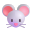
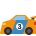

✕
Fechar
Início
Pré-Escolar
1º Ano
2º Ano
3º Ano
4º Ano
Voltar
Labirintos
Consegues descobrir o caminho?
🧀
Escolhe o teu labirinto!

Labirinto do Rato
Labirinto da Abelha
Labirinto do Cão

Corrida do Carro
MENU
▲
◀
▼
▶
DICA
Fantástico!
Fim do caminho!
JOGAR OUTRA VEZ
VOLTAR AO MENU